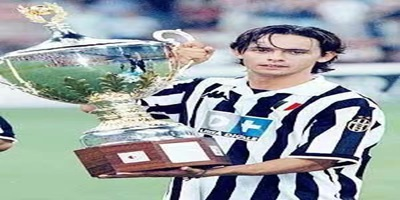

我的爱好-足球
2002年4月11日，AC米兰在欧联杯第二回合半决赛中3比1战胜多特蒙德，因扎吉打进1球，并送出1次助攻， 但AC米兰最终以两回合3比5的总比分失利，从而无缘决赛。
2001-02赛季，因扎吉代表AC米兰在各项赛事中出场28次，打进16球，助攻4次。
2002年8月28日，AC米兰在欧冠附加赛第二回合比赛中1比2负于捷克的利贝雷茨足球俱乐部，
摄影作品


2002年4月11日，AC米兰在欧联杯第二回合半决赛中3比1战胜多特蒙德，因扎吉打进1球，并送出1次助攻， 但AC米兰最终以两回合3比5的总比分失利，从而无缘决赛。
2001-02赛季，因扎吉代表AC米兰在各项赛事中出场28次，打进16球，助攻4次。
2002年8月28日，AC米兰在欧冠附加赛第二回合比赛中1比2负于捷克的利贝雷茨足球俱乐部，